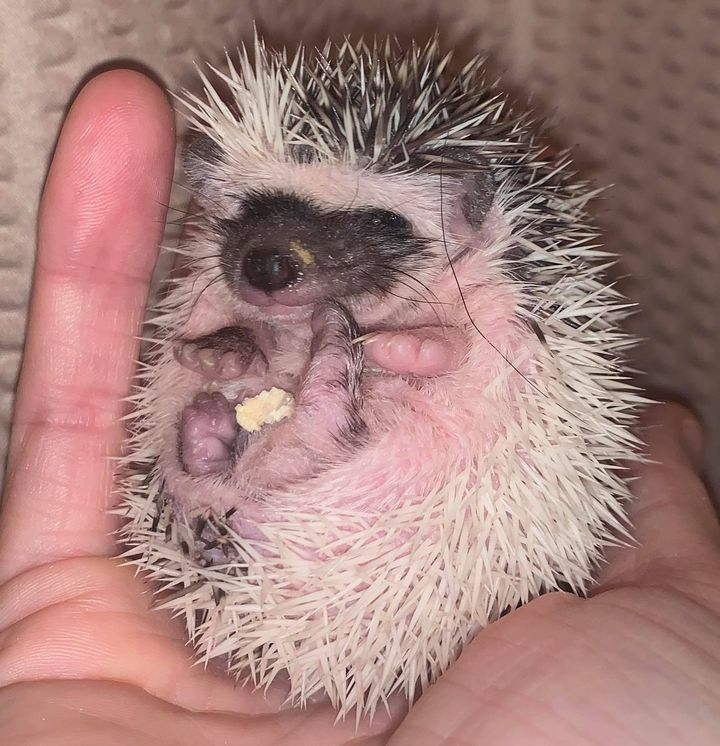

Baby Care

You may hear the occasional little peep from the babies from time to time but you probably won’t see them out of the nest for a few weeks.
Do not disturbing the hedgehogs nest as it may result in an upset mother hedgehog. Since a mother hedgehog that thinks its nest is in danger she might abandon or kill the litter.
Their eyes are closed, and ears and facial features are wrinkly and aren’t clearly defined when they are born though the eyes start to open generally between day 15 and 18 and the babies start to explore their surroundings. This is usually a safe week to hold the babies but make sure to watch the mom to be sure she isn’t being too protective!
Nutrition
You want to give your hedgehog a balanced diet with clean fresh water. You should only give them a small portion of fruits and vegetables and the insects should be used as treats for them. The list below isn't a extensive list so if you are wondering if there is something else that you can feed them then a quick google search will suffice.
Food you can feed hedgehogs
- Dry Hedgehog or Cat Food
- Moist pet food that is made from meat
- corn
- beans
- peas
- apples
- carrots
- crickets
- mealworms
Environment
Hedgehogs are nocturnal and should be placed someplace away from bright lights, they are typically solitary animals and should be in individual cages. The temperature range that you should aim for is within 70-85 degrees fahrenheit. You should provide a hiding place within the cage.
Cages
You can check use this Cage Guide which does include a simple plastic storage container build for a in-depth guide on how to prepare a cage.
Some other recommendations i have is for $62.99 from Amazon.

A larger and more expensive cage would be $159.99 from Amazon.

Another is $71.98 from the chewy website. Chewy Cage (picture unavailable)
Accessories
You do not need many acccessories for Hedgehogs but i do suggest having some structure for them to hide in and possible a animal wheel without wires so they do not get their feet stuck inside.
Color Guide
There is over 90 variants of colors that hedgehogs come in. I will provide a quick description of the variants that i have.
Black

Their skin, face and eyes are black.
High Pinto

They have patches of white markings which randomly occur on the body of the hedgehog and they have black eyes.
Cinnamon

The face is not masked. The underbelly is white they have dark red eyes that look black unless in the light.
Reverse Pinto

They have small patch of a darker colored quills set against a white quill body. There can be a single patch or just a few small patches and they have black eyes.
Albino

They have no coloring or pigment whatsoever. Their hair and spines are both completely white and they have no banding anywhere. They have red eyes as well with a pinkish nose and skin.
Salt and Pepper

Salt and pepper hedgehogs have a black nose, ears, and shoulders. The rest of their face is white. Their quills are primarily white but black bands are present.